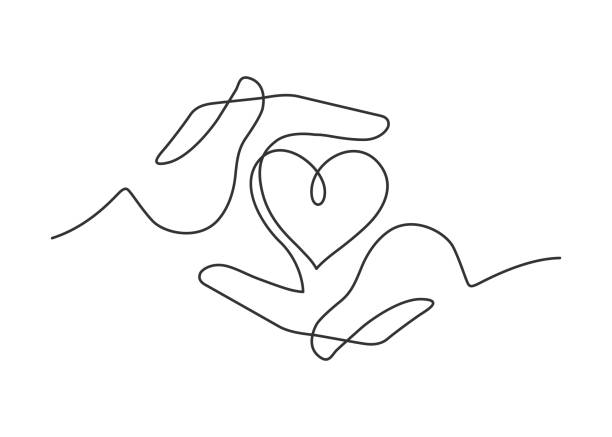

Destek Eli
A comprehensive mobile application designed for elderly care homes, enabling communication between residents and doctors, medication tracking, and emergency contact features.
Computer Engineering student passionate about building modern web and mobile applications. I turn ideas into reality through clean code and innovative solutions.
Here are some of my recent works
A comprehensive mobile application designed for elderly care homes, enabling communication between residents and doctors, medication tracking, and emergency contact features.
Route optimization tool developed during internship to determine the shortest path through multiple destinations, minimizing travel time and improving operational efficiency.
Custom player filtering system for football games, allowing advanced search based on specific attributes and criteria to quickly find the perfect players.
Personal movie tracking app with rating system, review features, and automatic poster fetching from TMDB API to keep track of watched films.
Get to know me better
I am a senior Computer Engineering student at Istanbul Sağlık ve Teknoloji University, passionate about creating innovative solutions through code.
My journey in software development began with mobile app development using Android Studio. Today, I work with modern web technologies including React, Node.js, and various databases, constantly expanding my skillset.
I thrive on learning new technologies and transforming ideas into functional, user-focused applications. My goal is to develop sustainable projects that deliver meaningful value to users.
Projects Completed
Technologies
Let's connect and collaborate